The game

The stages and their order
There are seven. Stages 1 and 2 always come first. Then the game shows the radar with three planets, EIONEUS, LAVINIA and KIERKE, and the player picks which one comes first: they are stages 3, 4 and 5, in whatever order he chooses (p10:988A). There is a clock: if it reaches zero, the game picks (p10:9A43). Stage 6 comes next. Stage 7 only exists with Nemesis 2 in the MSX's other slot, and it comes before stage 6 (p10:8B7B).

Before each stage come the take-off from the base and a title card (p10:8A20):
| Stage | Card | Subtitle |
|---|---|---|
| 1 | OPERATION ONE | -TOP FLIGHT SPEED TO LATIS- |
| 2 | OPERATION TWO | -CONDUCT TO SPACE STATION ZOT- |
| 3, 4, 5 | OPERATION THREE | -SET THE CRUSH BLOW SYSTEM- and the planet |
| 6 | OPERATION FOUR | -CRUSH SALAMANDER- |
| 7 | OPERATION X | -WRATH OF VENOM- |
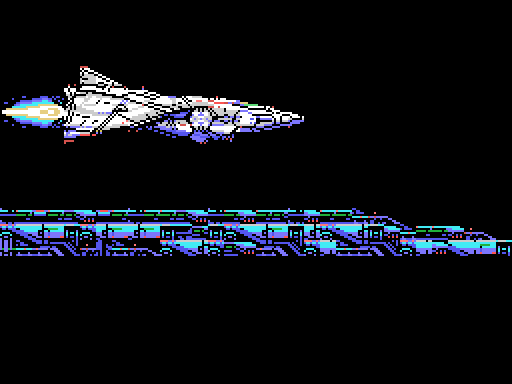

In the Japanese version the subtitle of stages 3, 4 and 5 is -SET THE LEEK SYSTEM- (p15:BF5A); the others are the same.
The routes
Stages 2, 3 and 6 scroll vertically; the others, horizontally (p02:8921). Each stage map is made of 4 x 4 character blocks (p13:6F4C), but the route is not a straight strip: in three stages the scroll stops and the screen moves through another map (p00:4BE6):
- in stage 1, at scroll 0x11F the view goes down 24 rows through the map at
p14:80FC, carries on horizontally and at 0x1FF goes down another 24; - in stage 4, at 0x1BF it goes down 24 rows through
p14:815C; - in stage 6, which goes up, at 0x14F it moves 32 columns to the left and at 0x167 back to the right, through
p14:818C.
The pictures build each route whole, the way the game feeds it into the screen.

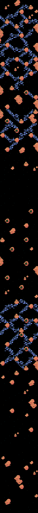
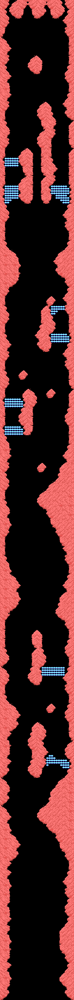
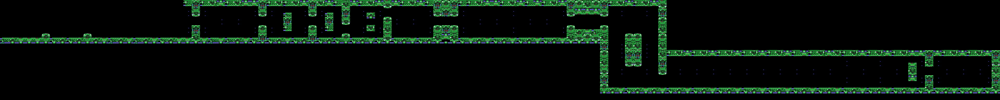
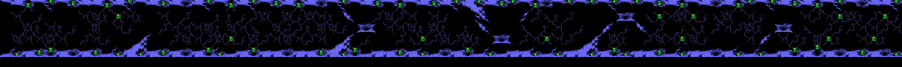
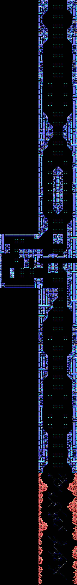
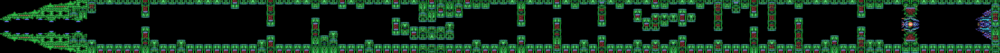
In stage 4, between scrolls 0x100 and 0x150, the base is barely visible: only one frame in 64 dumps the map with its scenery (p00:5FC5, p01:6016). In stages 1, 3, 6 and 7 the characters change half way (p00:5C77), and in stages 4, 5 and 6 some of them animate on their own (p12:A4A9).
The ship
Two 16 x 16 sprites and fourteen poses (p09:A145-p09:A19F, patterns at p14:95F7): level, climbing and diving, the same with the shield in front, and as many again for the vertical stages. The shield takes the hits counted in IY+22 (p02:960B).

There are two ships: SABEL TIGER, flown by IGGY ROCK, and THRASHER, flown by ZOWIE SCOTT. The menu offers 1PLAYER, EXCHANGE and DUALPLAY, and the SELECTION screen at p12:B877 asks YES or NO to «PLAYER1 JOINT GAME».
The enemies and the bosses
There are 65 enemy types, each with a 7-byte record (p01:6C5D). Each stage's enemies are shown with the frames they use.

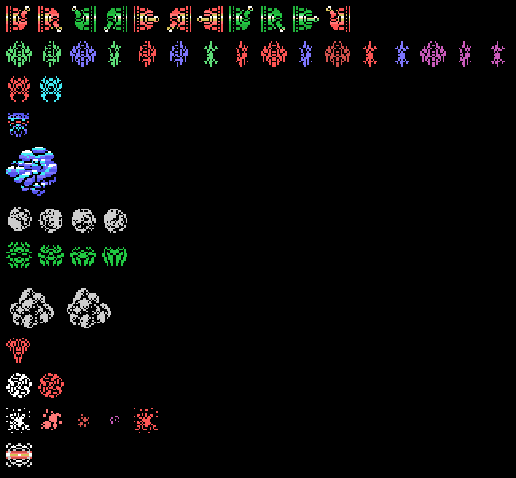
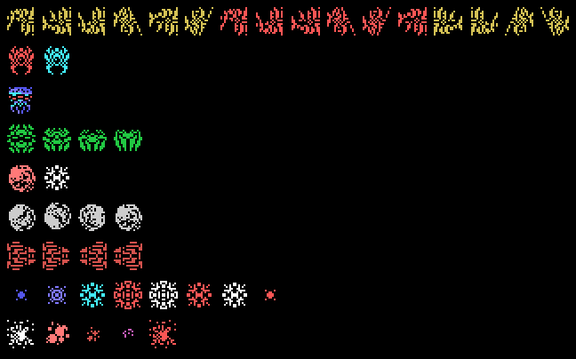
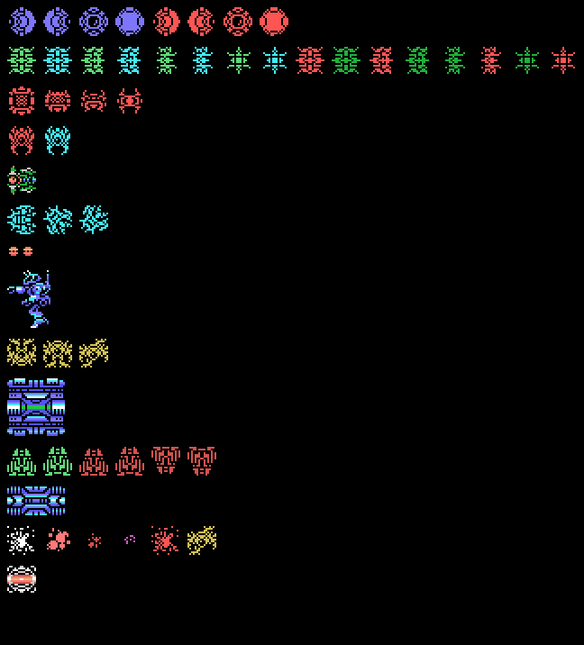
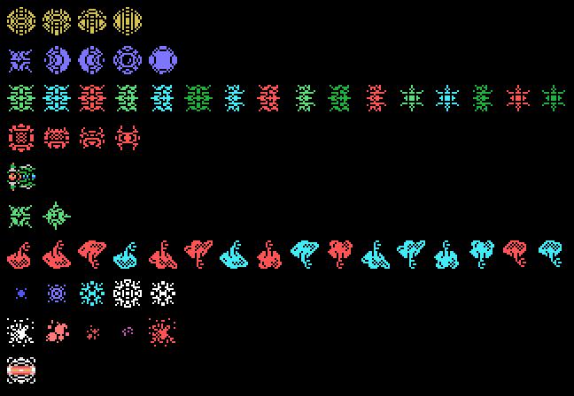
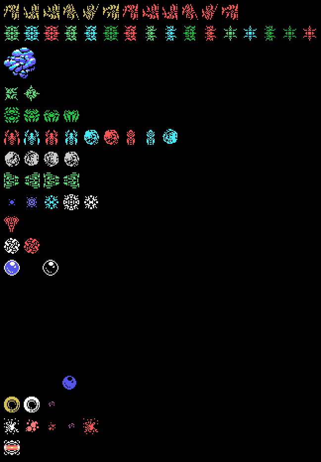
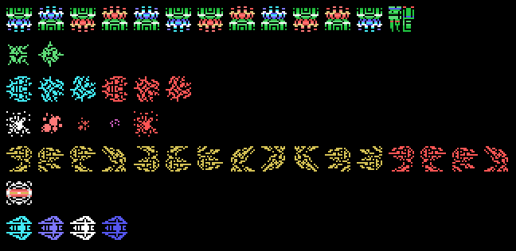
| Stage | Boss |
|---|---|
| 1 | boss 1: a brain with two tentacles |
| 2 | boss 2 |
| 3 | boss 8, a nest in the ceiling that drops spiders, then boss 3 |
| 4 | boss 4, after a wave (p03:BD53) |
| 5 | boss 5 |
| 6 | boss 7, an eye inside a sphere, then boss 6 |
| 7 | the fixed core at p12:A000, in two parts |
The code of the eight bosses is in bank 11 (table p01:6E89).

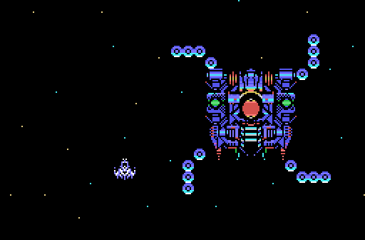
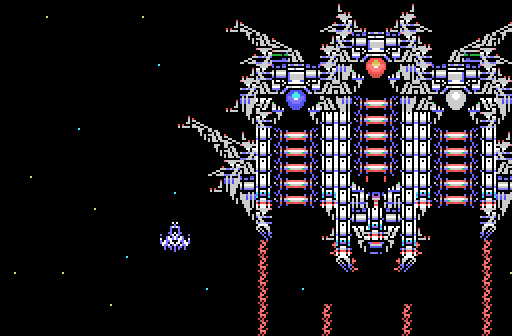
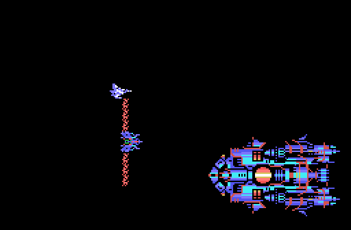
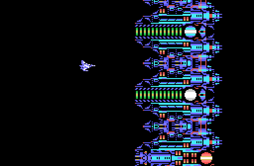
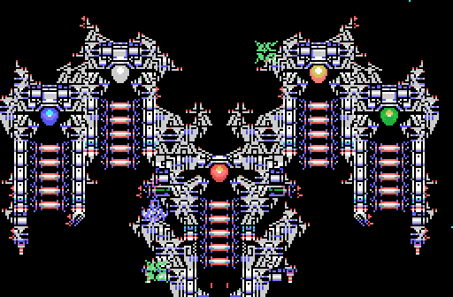
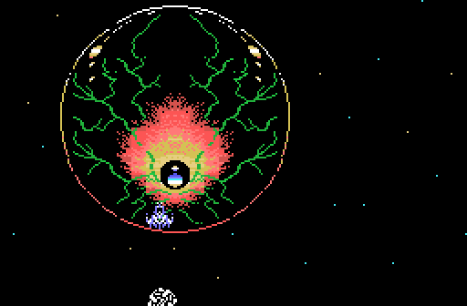
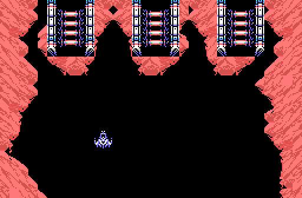
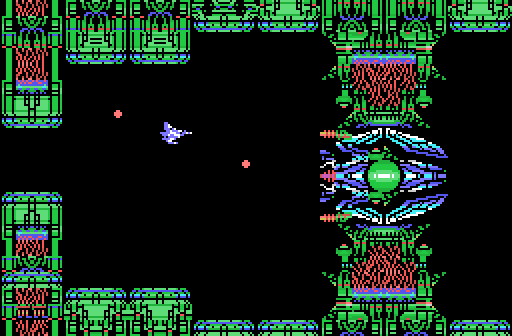
The items and the ending
Stages 3, 5 and 6 have items to pick up (p12:A5CE). Picking one up brings a screen with its result. Item 1 says «IN THE RUIN OF LATIS... YOU HAVE GOT A CRYSTAL BREEZE» and p01:7B73 sets 0xE30A to 1.
The ending comes when boss 6 falls (p11:B58D). With Nemesis 2 in the other slot and 0xE30A set, it is the good one (p10:8F7F): «ZELOS FORCE HAS DISAPPEARED!!», «...PEACE WILL RETURN TO LATIS AGAIN!!» and the pilot, «CONGRATURATION! YOU ARE GREAT STAR FIGHTER». Otherwise the CRUSH BLOW fails, VENOM shows up («HE DIED ONCE, BUT HE IS NOW REINCARNATED!!») and «THE CRUSH BLOW OPERATION TURNED OUT TO BE A FAILURE AFTER ALL». Both end with THE END and EXTEND PLAY? Y/N.
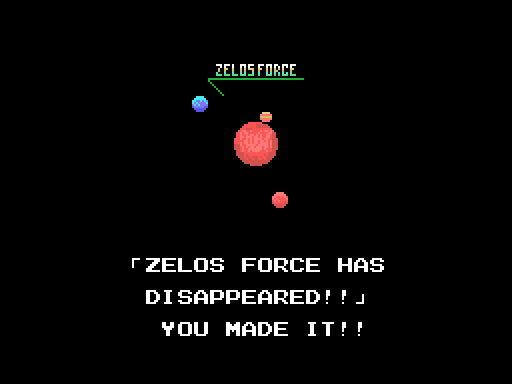
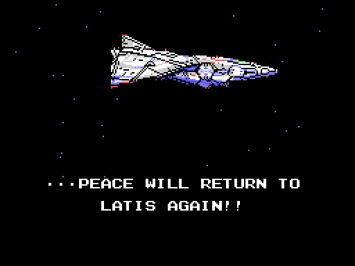


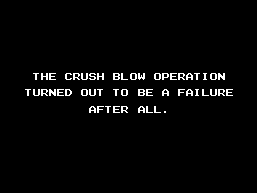
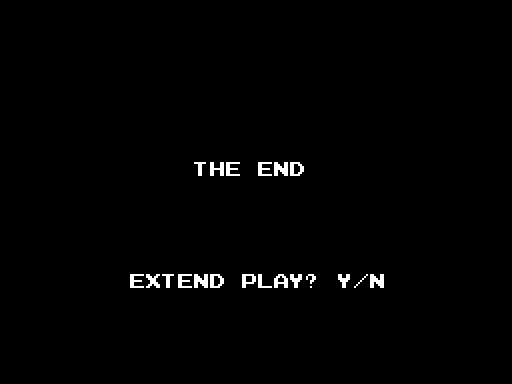
The texts
They are in bank 15, with a Japanese table and an English one chosen by byte 0x002B of the BIOS (p10:944C). The English ones, as they come (typos included):
- «A WARNING SIGNAL FROM LATIS.», «ZELOS-FORCE SURROUNDING LATIS», «BIGIN CRUSH-BLOW OPERATIONS! SPACE FORCE!! GET SET!!», «HYPER SPACE FIGHTER», «SABEL TIGER / PILOT - IGGY ROCK», «THRASHER / PILOT - ZOWIE SCOTT», «CAN THEY RESCUE PLANET LATIS?»
- between stages: «ASSESS ARMS SUPPLY SITUATION THEN DICIDE WITHIN TIME LIMIT.», «WE HAVE SET ALL OF THE CRUSH BLOW SYSTEMS.», «OK, SWITCH ON!!», «WAIT! PLEASE REMEMBER THE PREDICTION»
- the prediction, in four chapters: the devil that came from the sphere and his copper shield, the huge sphere and the shining ball, the great devil and his nucleus, and the five-eyed green devil that can only be killed by the crystal.